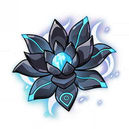
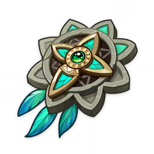

Genshin Impact · Versión 7.2
Análisis del Rol y Escalado
Kinich es un personaje de elemento Dendro originario de Natlan que utiliza Mandoble y se posiciona en el tier T1 (A+) Main DPS dentro del rol de Hypercarry Dendro en Campo (Enganche de Gancho & Cañonazos de Escamas). Su rendimiento en combate gira en torno a este eje principal: Escalado por ATQ% y Multiplicadores Masivos de Cañón E (Escamas Noctámbulas).
Para maximizar su aporte en el equipo, la configuración prioritaria combina Colmillo del Rey de la Montaña con el conjunto de artefactos Códice de Obsidiana (4 piezas), respetando la jerarquía de estadísticas 1. Daño Crítico / Prob. Crítica (tope 60% CR con Obsidiana) > 2. ATQ% > 3. Recarga de Energía% (120% – 130% ER) > 4. Maestría Elemental y subiendo sus habilidades en orden: Habilidad Elemental (E - Cañón) >>> Definitiva (Q) >>> Ataques Normales.
Mejores Armas
Opciones recomendadas ordenadas por rendimiento según el meta actual y compatibilidad con sus rotaciones:
-
 Colmillo del Rey de la Montaña ★★★★★Opción por rol+Prob. Crítica, genera acumulaciones de daño al causar Quemadura o Crepitar.
Colmillo del Rey de la Montaña ★★★★★Opción por rol+Prob. Crítica, genera acumulaciones de daño al causar Quemadura o Crepitar. -
 Médula de la Serpiente Marina ★★★★Opción por rol+Prob. Crítica y hasta +50% daño directo en sus cañonazos de escamas.
Médula de la Serpiente Marina ★★★★Opción por rol+Prob. Crítica y hasta +50% daño directo en sus cañonazos de escamas. -
 Terragitador ★★★★Opción por rolForja de Natlan: +32% Daño de Habilidad Elemental al causar reacciones Pyro.
Terragitador ★★★★Opción por rolForja de Natlan: +32% Daño de Habilidad Elemental al causar reacciones Pyro. -
 Lápida del Lobo ★★★★★Opción por rolEnorme bono de ATQ%.
Lápida del Lobo ★★★★★Opción por rolEnorme bono de ATQ%.
Mejores Sets de Artefactos
Combinaciones de 4 piezas o mezclas de 2 piezas para maximizar su contribución:
-

Códice de Obsidiana (4 piezas) BiS Indiscutible+40% Prob. Crítica garantizada al gastar puntos de Noctambulismo en su gancho.
-

Sueños Inacabados (4 piezas) Alternativa Quemadura+50% Daño permanente si hay enemigos afectados por Quemadura en combate.
Estadísticas Principales y Secundarias
Atributos prioritarios en artefactos para un balance óptimo de daño o soporte:
| Pieza | Estadística Principal |
|---|---|
| Reloj (Arenas) | ATQ% |
| Cáliz | Bono Daño Dendro% |
| Corona | Daño Crítico% (o Prob. CR) |
Prioridad de Subestadísticas
- 1. Daño Crítico / Prob. Crítica (tope 60% CR con Obsidiana)
- 2. ATQ%
- 3. Recarga de Energía% (120% – 130% ER)
- 4. Maestría Elemental
Prioridad de Talentos
Habilidad Elemental (E - Cañón) >>> Definitiva (Q) >>> Ataques Normales
Objetivos de Estadísticas (Nivel 90)
Las metas numéricas exactas de Kinich varían según el arma equipada, los refinamientos y la generación de partículas de su equipo.
Prioriza cumplir primero la Recarga de Energía necesaria para mantener la rotación fluida de su Habilidad Definitiva antes de buscar subestadísticas ofensivas adicionales.
Con piezas principales de ATQ%, Bono Daño Dendro% y Daño Crítico% (o Prob. CR), enfoca tu farmeo de artefactos en: 1. Daño Crítico / Prob. Crítica (tope 60% CR con Obsidiana) > 2. ATQ% > 3. Recarga de Energía% (120% – 130% ER) > 4. Maestría Elemental (Escalado por ATQ% y Multiplicadores Masivos de Cañón E (Escamas Noctámbulas)).
Talentos de Combate y Materiales (Nivel 1 al 10)
Habilidades principales de Kinich y desglose exacto de libros, materiales y Mora para mejorar sus talentos:


Composiciones de Equipo Recomendadas
Alineaciones con mayor sinergia elemental y amplificación de daño en el Abismo y Teatro Fantasía:
Materiales de Ascensión (Nivel 1 al 90)
Recursos totales requeridos para desbloquear las 6 fases de ascensión de Kinich. Coste total de Mora en ascensiones: 420.000 Mora.


Sinergias y Guías Relacionadas
Explora las fichas de armas, artefactos y materiales de los principales compañeros de equipo para Kinich: